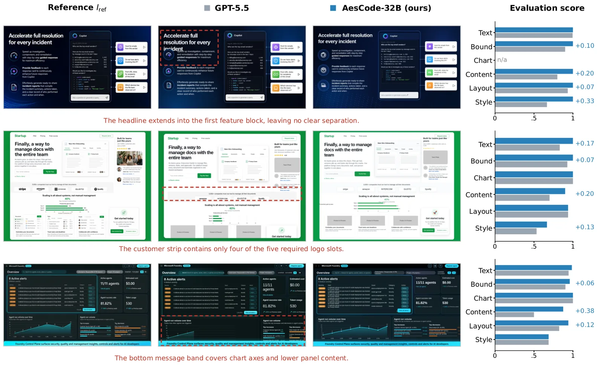

O Dilema da Geração de Artefatos Visuais como Código
Gerar artefatos visuais ricos em informação, como slides, pôsteres e dashboards, diretamente como código (HTML/CSS) é altamente desejável. A saída estruturada permite edição, verificação e integração em pipelines de software. No entanto, modelos de linguagem e código enfrentam uma limitação fundamental: eles não possuem percepção visual nativa do canvas final. Eles declaram layout e cores linha por linha, o que frequentemente resulta em saídas que satisfazem as restrições de conteúdo, mas falham em planejamento espacial e qualidade estética.
Por outro lado, geradores de imagens generativas (como DALL-E ou Midjourney) excellem em composição visual e design, mas frequentemente alucinam texto, números e relações lógicas. Isso torna suas saídas raster não editáveis e não verificáveis. O paper AesCode, desenvolvido por pesquisadores da Microsoft, Yale e outras instituições, propõe um ponto intermediário: usar um gerador de imagens para fornecer orientação estética, enquanto um modelo de código garante a integridade factual.
A abordagem não trata a imagem de referência como um alvo de reprodução pixel a pixel, o que seria rígido e propenso a erros devido às alucinações do gerador de imagens. Em vez disso, a imagem serve como uma 'dica' de design. O desafio central é treinar o modelo de código para extrair padrões de layout e estilo da imagem, sem copiar seu conteúdo factual incorreto, mantendo-se fiel ao prompt de texto original.

Representação como Grafo de Design
Para resolver o problema de alinhar código com estética sem perder a precisão, os autores introduzem a representação do alvo como um 'Design Graph' (Grafo de Design). Este grafo estruturado separa explicitamente a informação semântica das dicas visuais. Ele define a tela como uma raiz que contém elementos funcionais (nós), como blocos de texto, tabelas, gráficos e contêineres (regiões, cards, painéis).
Cada nó possui atributos desacoplados: atributos de conteúdo (strings específicas, dados de séries temporais) e atributos visuais (caixas delimitadoras, cores, tipografia). As arestas do grafo definem relações estruturais, como contenção hierárquica, alinhamento espacial e ordem. Essa decomposição permite que o sistema avalie propriedades individualmente. Em vez de uma pontuação única e ambígua para 'beleza', o sistema pode verificar se o texto está correto e, separadamente, se o espaçamento é agradável.
O grafo de destino (G_tgt) é construído combinando os requisitos do prompt com as pistas visuais da imagem de referência (I_ref). A imagem de referência pode conter erros factuais, mas o grafo permite que o modelo ignore esses erros e foque apenas na estrutura e no estilo, aplicando restrições independentes ao conteúdo e à aparência.
Recompensas Decoupled Cross-Modal
A inovação principal do AesCode reside em como ele calcula as recompensas para o treinamento por reforço. Em vez de usar uma única métrica, ele deriva recompensas complementares e desacopladas diretamente do grafo de design. Essas recompensas são divididas em dois canais: verificadores determinísticos e um juiz baseado em VLM (Vision-Language Model).
Os verificadores determinísticos avaliam propriedades que podem ser extraídas programaticamente do código ou do DOM renderizado. Existem seis verificadores principais: Execução (verifica erros fatais), Texto (verifica strings obrigatórias), Boundary (verifica contenção e proporção do canvas), Tabela/Gráfico (verifica estrutura e dados de tabelas HTML e gráficos ECharts), Layout Semântico (compara a posição de blocos de texto OCR entre a referência e o candidato) e Espaçamento em Branco (avalia a distribuição de espaço vazio).
Para propriedades não analisáveis programaticamente, como a harmonia visual geral ou relações estéticas complexas, o sistema utiliza o Visual Graph Rubric (VGR). Em vez de pedir ao VLM uma nota holística e instável, o VGR gera uma lista de perguntas binárias específicas para a amostra, baseadas nos nós e arestas do grafo de design. O VLM responde a essas perguntas (ex: 'O gráfico está alinhado à esquerda do texto?'), e a taxa de aprovação fornece a pontuação estética (s_vgr). Isso transforma o julgamento visual subjetivo em critérios explícitos e verificáveis.
Otimização com GDPO e SFT
O treinamento ocorre em duas fases. Primeiro, Supervised Fine-Tuning (SFT) com demonstrações de alta qualidade geradas por modelos fronteira (GPT-5.5) para ensinar o formato de entrada (prompt + referência) e saída (código). Em seguida, o treinamento por Reforço (RL) utiliza Group reward-Decoupled Normalization Policy Optimization (GDPO).
O GDPO é crucial para equilibrar os sinais de recompensa densos dos verificadores determinísticos com os sinais esparsos do VLM. Sem normalização por canal, os verificadores determinísticos poderiam dominar o gradiente, negligenciando a melhoria estética. O GDPO normaliza as recompensas por canal, permitindo que o modelo aprenda tanto a correza factual quanto a qualidade visual de forma equilibrada.
Durante o RL, o modelo gera múltiplas rollouts (amostras) para cada prompt. As amostras são pontuadas usando o grafo de design parseado do código renderizado. Apenas as amostras que excedem um limiar de recompensa são retidas para atualizar a política. Isso garante que o modelo aprenda com exemplos que não apenas funcionam, mas também atendem aos critérios estéticos definidos pelo grafo.

Resultados e Benchmark
Os autores criaram um benchmark específico para avaliar esse setting, composto por 300 prompts com imagens de referência geradas. O benchmark separa a correza verificável (Rule) da qualidade visual (Visual). A métrica Rule avalia textos, limites e estruturas de gráficos/tabelas. A métrica Visual avalia conteúdo, layout e estilo, com pontuações altamente consistentes com julgamentos humanos.
Os resultados mostram que imagens de referência melhoram a qualidade visual de todos os modelos, mas o AesCode extrai esse benefício de forma mais eficaz. Modelos abertos como Qwen3-VL, quando treinados com AesCode, mostram ganhos massivos. O AesCode-8B melhora a qualidade visual em 31.1 pontos percentuais em relação ao baseline Qwen3-VL-8B, e o AesCode-32B melhora em 22.4 pontos.
Em termos de correza factual, o AesCode supera modelos fechados como GPT-5.5 e Claude Opus 4.8. Enquanto esses modelos fechados podem ter melhor estética inicial, eles frequentemente falham em verificar a precisão dos dados nos gráficos e tabelas. O AesCode-32B atinge uma pontuação de 90.37 na métrica Tabela/Gráfico, demonstrando que a estrutura de grafo e os verificadores determinísticos são eficazes para garantir a integridade dos dados.
Análise de Ablação e Limitações
As ablações confirmam a importância do Grafo de Design e do VGR. Remover o VGR ou usar uma pontuação holística de VLM resulta em quedas significativas na qualidade visual. O VGR, ao ancorar o julgamento visual em elementos específicos do grafo, evita que o modelo se perca em nuances estéticas que não afetam a estrutura funcional.
Além disso, o treinamento com imagens de referência como entrada e como fonte de recompensa é essencial. Modelos treinados apenas com prompts de texto (sem referência) têm desempenho inferior, embora ainda sejam melhores que os baselines não treinados. Isso sugere que o AesCode internaliza princípios de design que podem ser aplicados mesmo na ausência de uma referência explícita durante a inferência.
No entanto, o paper reconhece limitações. O método depende da qualidade do gerador de imagens para criar a referência e do parser para construir o grafo de design corretamente. Erros no parsing do código renderizado podem levar a recompensas incorretas. Além disso, a abordagem foca em artefatos estruturados (slides, dashboards) e não generaliza necessariamente para designs livres ou pixel-level geometry complexa. Desafios em relações semânticas visuais mais complexas e refinamento iterativo de geometria permanecem como áreas abertas.
Conclusão
O AesCode demonstra que é possível treinar modelos de código para gerar artefatos visuais que são simultaneamente verificáveis e esteticamente competentes. Ao desacoplar as recompensas de conteúdo e estilo através de um grafo de design, o método evita as armadilhas de copiar alucinações de geradores de imagens, utilizando-os apenas como guias de design.
Este trabalho abre caminho para um novo paradigma onde geradores de imagens atuam como 'professores' escaláveis de design visual para modelos generativos estruturados. Para desenvolvedores e cientistas de dados, isso significa que ferramentas de geração de código podem agora produzir dashboards e relatórios que não apenas funcionam, mas também comunicam informações de forma clara e visualmente atraente, reduzindo a necessidade de revisão manual de design.
O que fica
- Modelos de código não 'veem' o layout; o AesCode usa uma imagem de referência gerada por IA apenas como guia estético, não como ground truth.
- O método converte o canvas em um Grafo de Design, permitindo recompensas determinísticas para conteúdo e um VLM para estética.
- AesCode-32B supera Qwen3-VL em 31.1 pontos de qualidade visual, alcançando níveis comparáveis a modelos fechados como GPT-5.5.
- A supervisão via grafo evita que o modelo copie alucinações da imagem de referência, mantendo a fidelidade ao prompt de texto.
Paper original: AesCode: Aesthetic Code Generation with Decoupled Cross-Modal Rewards
Comentários
Nenhum comentário ainda. Seja o primeiro.